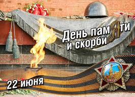

ДЕНЬ ПАМЯТИ И СКОРБИ
Двадцать второе июня 1941 года — одна из самых печальных дат в нашей истории, начало Великой Отечественной войны. Этот день напоминает о всех погибших, замученных в фашистской неволе, умерших в тылу от голода и лишений.
Давая отпор врагу, советский народ принес неисчислимые жертвы. Путь к Победе был долгим и трудным: 1418 дней, и каждый длился дольше века. Это была самая страшная война в истории человечества. Она унесла свыше 26 миллионов 600 тысяч жизней наших соотечественников. Таких потерь не переживала ни одна страна. Никогда ранее наша страна не сталкивалась с подобными военными жертвами. Даже за вместе взятый восьмилетний период первой мировой (1914-1918 гг.) и гражданской (1918-1922 гг.) войн, с их смертоносными эпидемиями (тифозными, холерными, малярийными и прочими) было убито, умерло от ран и болезней почти в три раза меньше - 10,3 млн. чел. Эту Победу, по данным социологов, большинство наших сограждан считает самой важной в истории страны.
Калининская область в её довоенных границах стала фронтовой уже в первые дни июля 1941 г., а полностью была освобождена 19 июля 1944 г. Под игом оккупации в течении некоторого времени находились Андреапольский, Бельский, Жарковский, Западнодвинский, Зубцовский, Нелидовский, Оленинский, Ржевский, Пеновский, Селижаровский, Старицкий, Торопецкий районы, а также часть территории Калининского, Конаковского, Осташковского, Торжокского районов в нынешних их границах.
Страшные кровавые раны оставила война на Тверской земле. Только в областном центре, где два месяца хозяйничали фашисты, было уничтожено 70 промышленных предприятий, 7714 жилых домов, 42 школы и несколько больниц. Захватчики разорили Ржев, Старицу, Зубцов, Селижарово, Молодой Туд, Погорелое Городище, Луковниково и другие города и районные центры. В Зубцовском районе были стерты с лица земли и уже никогда не поднялись 166 деревень, в Оленинском – 147, в Ржевском – 81 деревня. В деревне Ксты Пеновского района фашисты заживо сожгли всех жителей.
В Тверской области трудно найти семью, которая не познала бы горечь тяжелых утрат. Уже в первые месяцы войны из области ушли на защиту Родины 325 тысяч человек. А всего за годы войны свыше 700 тысяч наших земляков с оружием в руках самоотверженно защищали Отчизну. Тысячи коммунистов и комсомольцев ушли на фронт по партийной мобилизации. В боях за Родину погибли и были замучены в фашистском плену, умерли от ран в госпиталях и пропали без вести более 250 тысяч воинов – калининцев. К нашему стыду и через 65 лет после Победы мы не можем назвать более точное число наших земляков, не вернувшихся с фронтов Великой Отечественной. И никто не может или не хочет ответить на вопрос, почему потери Красной Армии подсчитаны с точностью до сотен человек, а мы в области оперируем цифрами с точностью до десятков тысяч. Ещё меньше мы знаем о потерях среди мирного населения области, числе погибших партизан и подпольщиков, бойцов истребительных отрядов. А все потому, что в Тверской области нет официального органа, который мог бы заниматься этим вопросом. Для примера: в соседней с нами Смоленской области постоянно действующая редколлегия Книги Памяти завершив работу по точному подсчету потерь смолян, воевавших в составе действующей армии, уже несколько лет ведет сбор данных о потерях среди мирного населения. Давно назрело принятие решения по этому вопросу и на обильно политой кровью Тверской земле.
Последним пристанищем павших в сражениях стали воинские захоронения. Только на территории Тверской области учтено свыше 600 братских могил, воинских кладбищ и мемориалов. В них покоится прах более 260 тысяч воинов всех наций и народностей бывшего Советского Союза.
Та страшная война и сегодня продолжает жить в каждом из нас. Она застряла осколками и ранами в телах фронтовиков, она в орденах и медалях ветеранов, в сохранившихся фронтовых письмах и похоронках.
Особой, не затихающей болью она продолжает отзываться в сердцах тех, кто в годы войны потерял защищавших Родину отцов. К детям погибших защитников Отечества не подходят слова о том, что время лечит. В этом мы убеждаемся ежедневно, видя их слезы и слушая рассказы о судьбах отцов, безутешном горе матерей, голодном детстве, умерших малолетних братьях и сестрах. У большинства сирот войны продолжает жить обида за неоцененный по достоинству подвиг самопожертвования отцов, безразличие и глухоту власти к их положению в обществе как после войны, так и сейчас.
Памятная дата «День памяти и скорби» установлена Указом Президента России от 8 июня 1996 года, как дань памяти жертвам Великой Отечественной войны 1941-1945 годов, а также жертвам всех войн за свободу и независимость России.
В День памяти и скорби на территории страны приспускаются Государственные флаги Российской Федерации.
Будем помнить вечно славных защитников Родины, отстоявших родную землю, гордиться мужеством, героизмом, стойкостью воинов Красной Армии, самоотверженностью тружеников тыла — женщин, стариков, детей.
Низко склоняем головы перед всеми погибшими. Вечная память героям!
|